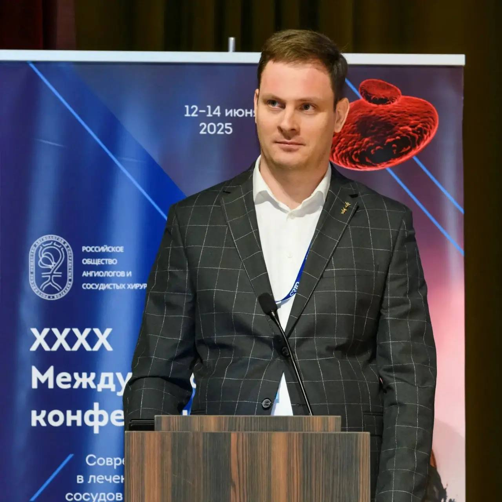

Образование и научная деятельность


Окончил Кубанский государственный медицинский университет. Прохожу регулярные курсы повышения квалификации, участвую в российских и международных конференциях, занимаюсь научной деятельностью в области сосудистой хирургии.